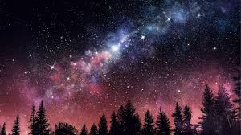

|

Yıldızlar
Yıldızlar, evrenin en temel ve en etkileyici gökcisimleridir. Kendi ışıklarını üretebilen bu dev plazma kütleleri, evrendeki enerji kaynaklarının başında
gelir. Her yıldız, çekirdeğinde meydana gelen nükleer füzyon tepkimeleri sayesinde ısı ve ışık yayar. Bu süreçte hidrojen atomları helyuma dönüşür ve
muazzam miktarda enerji açığa çıkar.
Yıldızların boyutları, sıcaklıkları ve renkleri büyük farklılıklar gösterebilir. Küçük ve soğuk yıldızlar kırmızı renkte, devasa ve sıcak yıldızlar ise
mavi veya beyaz renkte parlar. Güneş, orta büyüklükte bir yıldızdır ve “sarı cüce” olarak sınıflandırılır. Yaklaşık 4,6 milyar yaşında olan Güneş,
Dünya’daki yaşamın var olmasını sağlayan en önemli enerji kaynağıdır.
Bir yıldızın yaşam döngüsü doğum, olgunluk ve ölüm evrelerinden oluşur. Yıldızlar, uzaydaki gaz ve toz bulutlarının (nebula) çökmesiyle doğar.
Çekirdeğinde füzyon başlar ve yıldız parlamaya başlar. Zamanla yakıtı azaldıkça dengesini kaybeder; küçük yıldızlar beyaz cüceye, büyük yıldızlar
ise süpernova patlaması sonucunda nötron yıldızı ya da karadelik haline gelir.
Yıldızlar sadece ışık saçmaz, aynı zamanda çevrelerindeki gezegenlerin, uyduların ve asteroitlerin oluşumuna da öncülük eder. Bir yıldızın etrafında
dönen gezegen sistemine gezegen sistemi denir, Güneş Sistemi de bunun en bilinen örneğidir.
Sonuç olarak, yıldızlar evrenin yapı taşlarıdır. Onlar olmasaydı ne gezegenler ne de yaşam var olabilirdi. Her biri, milyarlarca yıl süren yaşam
döngüsüyle uzayın derinliklerinde sessiz ama görkemli bir şekilde varlığını sürdürür.
|